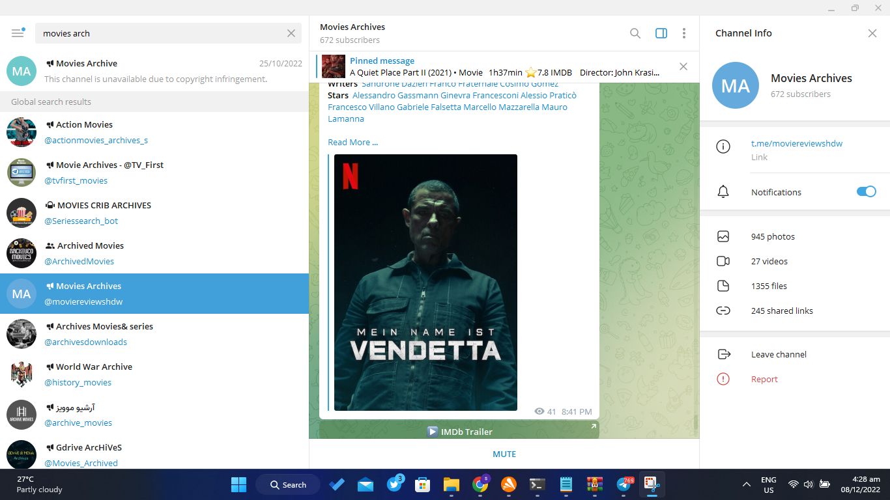
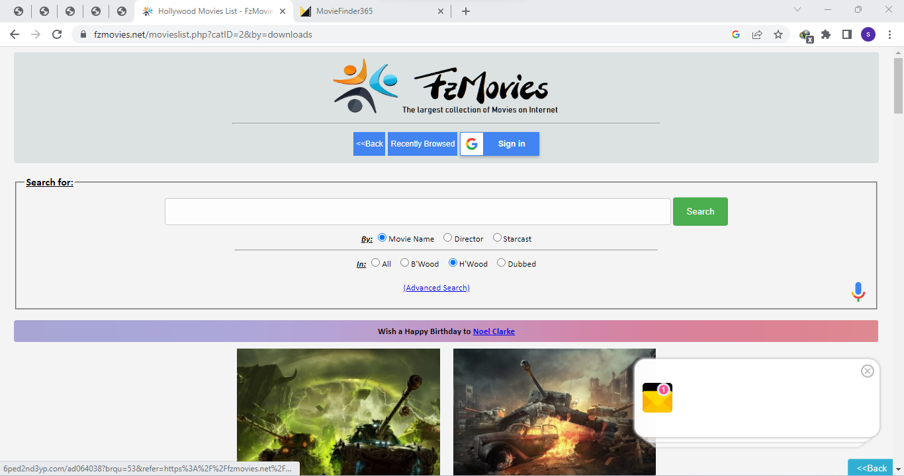
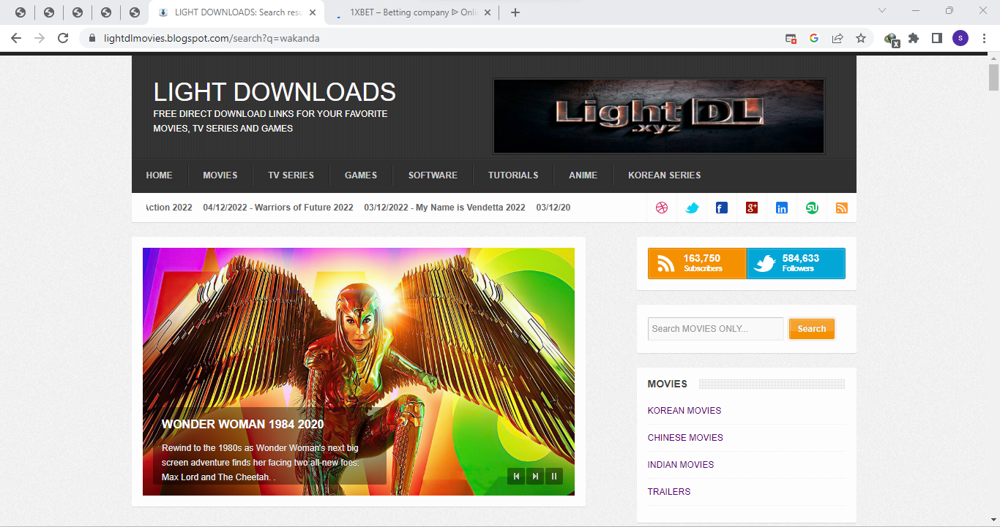

There are Many online Site Where you can get free latest movies, either to stream online
or to download it, in this episode we will be covering a few of them,Top three to be precise. Direct links are attached
to each so you can move there right away. Click on the images to move to the site.
1. The first is telegram, telegram has a lot of channels that post movies for free, you only have to find
the write channel. Check HERE to know the top five Movie channel.

2. Second on the list is FZ movies.net, well this site is quiet cool but has tons of adds there
which makes it hard to navigate through, Start downloading movies now.

3. Third is Light downloads, here its easy to download movies for free in minutes click
on the Picture to navigate to lightDL
